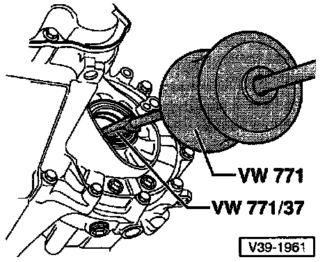

Transmissions With Springs Behind Axle Flanges
Identification of Seal
- Diameter a = 48.0 mm (1.890 in.)
- Height b = 6.8 mm (0.268 in.)
Removal
- Turn steering completely to right (full-lock)
- Disconnect right axle shaft from axle flange
^ Tightening Torque:
Axle shaft to axle flange 45 Nm (33 ft lb)
- Press axle shaft upward as far as possible and support with block of wood, or equivalent, under shaft
- Remove seal
CAUTION: Avoid damaging surface finish of axle shaft.
NOTE: The following steps are for Removal of the Left Side Seal.
- Remove wheel
^ Tightening Torque: Wheel to wheel hub 110 Nm (31 ft lb)

- Remove transmission support (A) (where applicable). Disconnect coolant overflow reservoir and lay it aside for access to the support
^ Tightening Torque:
Transmission support to transmission 45 Nm (33 ft lb)
Transmission support to transmission mount 50 Nm (37 ft lb)
- Remove axle flange bolt
^ Tightening Torque:
Axle flange to transmission 25 Nm (18 ft lb)
- Place oil pan underneath and remove axle flange

- Remove seal
Installation
- Install in reverse order of removal. In the process, note the following:
^ Drive new axle flange seal in to stop
^ Fill space between sealing lip and dust seal with multi-purpose grease
^ Install axle flange
^ Check transmission oil, if necessary top off to lower edge of filler opening